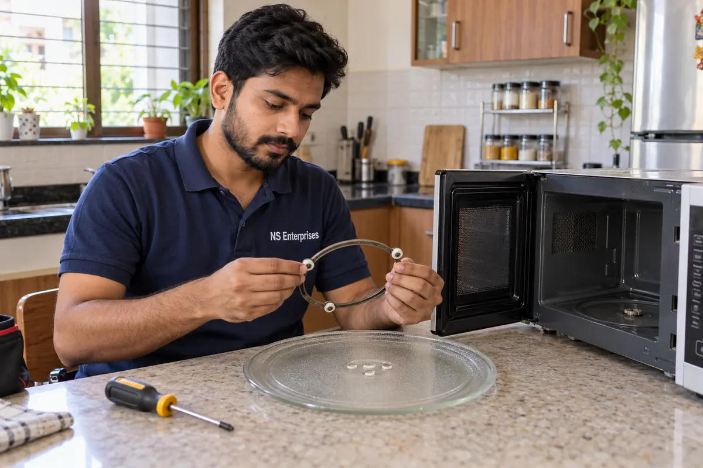

Microwave not heating food
If the light and turntable work but food stays cold, the fault is often in the magnetron, high-voltage diode, capacitor or a door switch. These parts can hold dangerous voltage, so leave testing to a technician.
Microwave oven not heating, sparking or showing a dead display? Stop using it and book a doorstep microwave service visit in Hyderabad or Secunderabad.

Common microwave oven faults and how they are diagnosed.
If the light and turntable work but food stays cold, the fault is often in the magnetron, high-voltage diode, capacitor or a door switch. These parts can hold dangerous voltage, so leave testing to a technician.
Metal utensils, food burnt onto the waveguide cover or damaged cavity paint can cause sparks. Switch off at the socket and do not run it again before inspection.
Checks cover the glass plate seating, roller ring, drive coupler and turntable motor.
A worn membrane keypad, loose connector or control board fault can stop some or all buttons responding.
The microwave will not start unless every door interlock switch closes correctly. The latch, hinges and switches are checked.
Unusual humming, overheating or sudden shutdown can point to the cooling fan, thermal cut-off or high-voltage circuit.
The final scope and price are confirmed after inspection.
Magnetron testing and magnetron replacement, high-voltage diode, capacitor and fuse checks for an oven not heating.
Membrane keypad, touch panel, display, relay and control board faults.
Turntable motor, door switch, latch, cooling fan, cavity light and waveguide cover.
We are an independent repair service. Brand names only identify your appliance.
Mention whether your IFB oven is solo, grill or convection and any code on the display.
Looking for an LG microwave service center? We are an independent repair option, not the brand’s own centre. Share the LG model to check parts.
Tell us whether the plate turns and the light works; that separates a heating fault from a power fault.
We help with microwave oven repair for brands including Samsung, LG, Bosch, Glen and Kaff. Share the model number printed inside or behind the oven when you book.
Requests accepted for IFB, LG, Samsung, Whirlpool, Panasonic, Godrej, Morphy Richards, Bajaj, Bosch and Kaff, subject to model and parts.
Ns Enterprises is based in Paigah Housing Colony, Begumpet, close to Paradise in Secunderabad. Find your area: Begumpet & Ameerpet, Secunderabad, Malkajgiri & ECIL, Uppal & Tarnaka, LB Nagar & Dilsukhnagar, Kukatpally & Miyapur, Gachibowli & Madhapur. Call 94939 84204 to confirm a visit to your address.
Tell us the appliance, the issue and your location. The visit charge is ₹350. Approve any repair or part only after you understand the quote.
Share symptoms, any error code and the brand and model if known.
Ask about inspection, parts and labour before proceeding.
Continue to the booking form to add your address. Today and the earliest slot are already selected.
A failed magnetron, high-voltage diode, capacitor or door switch is usually responsible. These need testing with proper equipment, so please do not open the oven yourself.
No. Stop using it, switch it off at the socket and have it inspected. Continuing can damage the magnetron or cavity.
The visit charge is ₹350. After inspection you get a quote for parts and labour, so you can decide whether repair or replacement makes sense.
Yes, you can request a doorstep visit. Call or WhatsApp to confirm your area and an appointment time.
You can book IFB, LG, Samsung and other solo, grill and convection models. Parts availability depends on the model and is confirmed before repair.
Call or WhatsApp your locality. We list microwave oven service in Hyderabad, Secunderabad and the areas shown on this page.